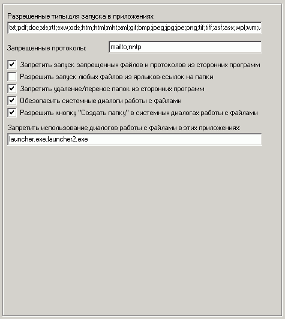

Наиболее важные опции на этой вкладке:
Разрешенные типы файлов для запуска в приложениях
Администратор сам устанавливает, какие типы файлов можно будет запускать пользователю через проводник пользователя и другие программы.
Запрещенные протоколы
Сторонние программы не смогут запустить указанные протоколы.
Запретить запуск запрещенных файлов и протоколов из сторонних программ
Включение указанных выше запретов.
Также можно задать список исключений - разрешенных программ на вкладке "Безопасность: Программы".
Разрешить запуск любых файлов из ярлыков-ссылок на папки
Если создать на рабочем столе шелла ярлык-ссылку на папку (локальную или сетевую), то можно либо разрешить запуск всех файлов из нее, либо только тех, кот. перечислены в параметре "Разрешенные типы файлов".
Обезопасить системные диалоги работы с файлами
Шелл будет выполнять перехват системных диалогов открытия и сохранения файлов для удобной и безопасной работы с файлами пользователей.
Использование данного режима настоятельно рекомендуется!